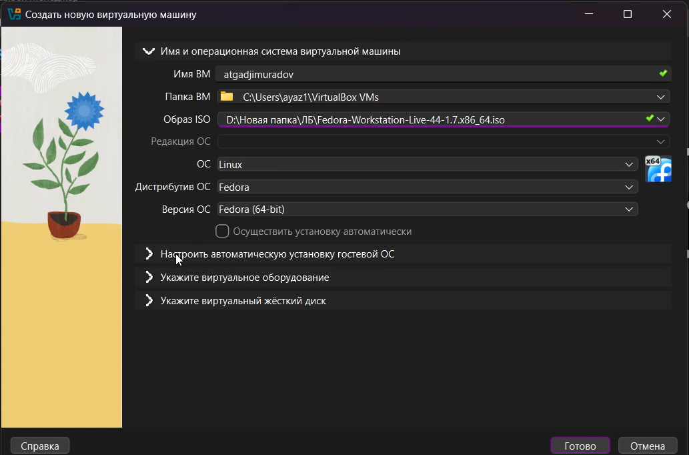
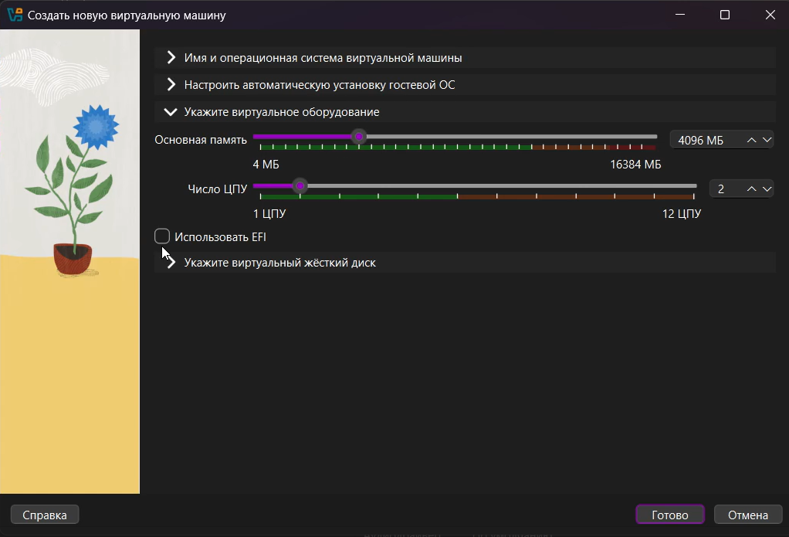
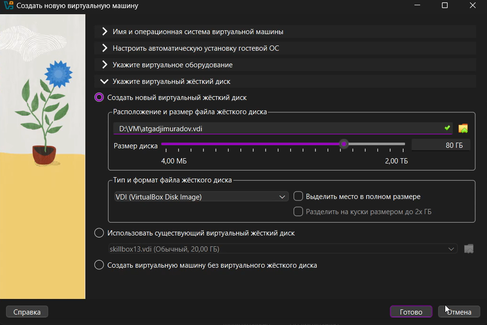
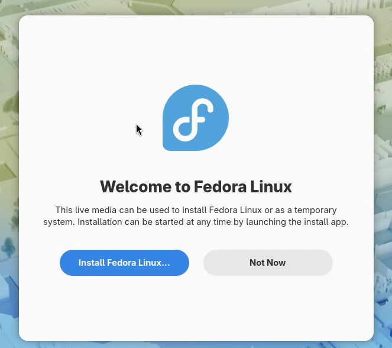
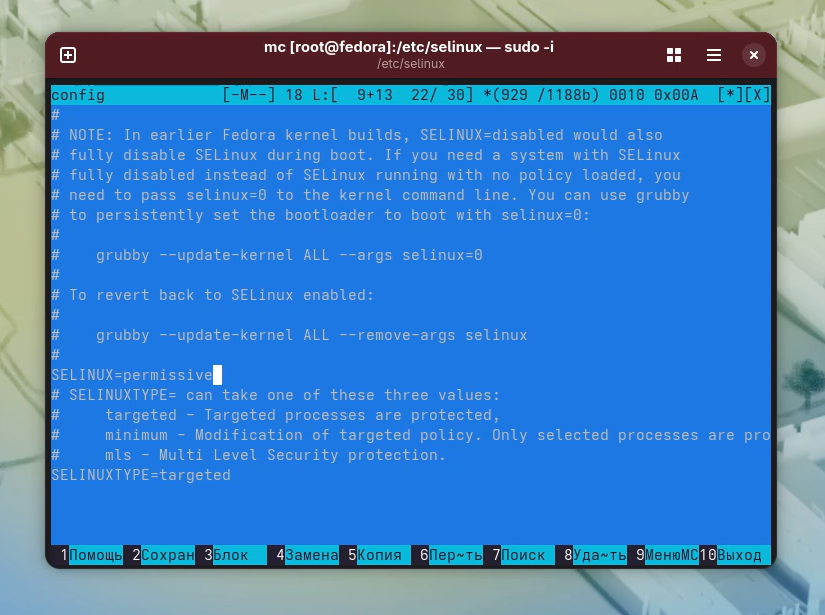
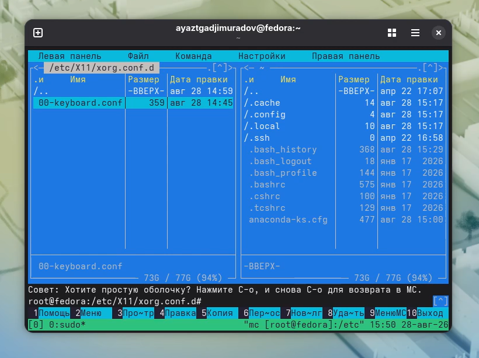
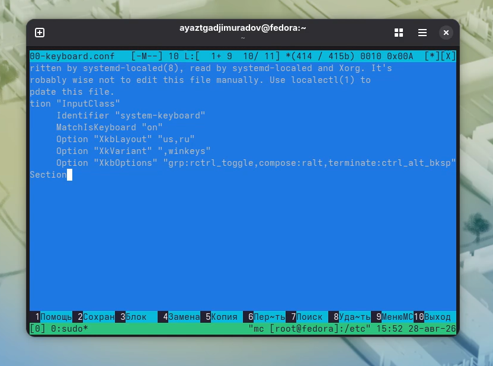
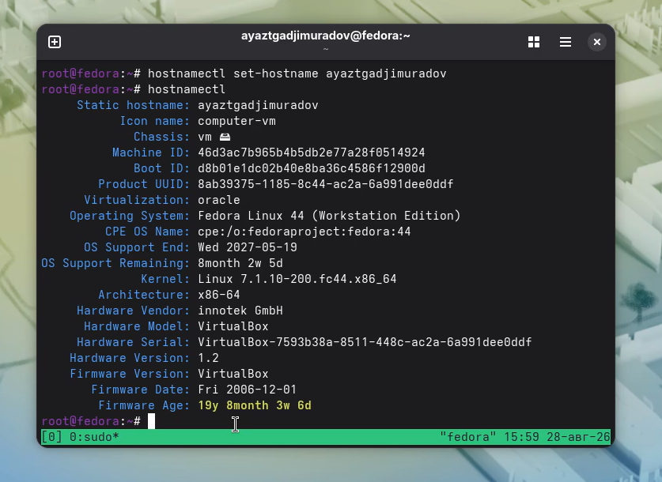

Целью данной работы является приобретение практических навыков установки операционной системы на виртуальную машину, настройки минимально необходимых для дальнейшей работы сервисов.
Для создания виртуальной машины нам потребуется менеджер виртуальных машин VirtualBox. 1. Нажимаем создать. 2. В появившемся окне придумываем имя для ВМ. 3. Выбираем заранее скачанный ISO образ Fedora




Установите средства разработки: sudo dnf -y group install development-tools Обновить все пакеты sudo dnf -y update
При необходимости можно использовать автоматическое обновление. Установка программного обеспечения: sudo dnf -y install dnf-automatic Задаёте необходимую конфигурацию в файле /etc/dnf/automatic.conf. Запустите таймер: sudo systemctl enable –now dnf-automatic.timer
Отредактируйте конфигурационный файл /etc/X11/xorg.conf.d/00-keyboard.conf:

Для этого можно использовать файловый менеджер mc и его встроенный редактор.


Перегрузите виртуальную машину:
sudo systemctl reboot
Создайте пользователя (вместо username укажите ваш логин в дисплейном классе): adduser -G wheel username Задайте пароль для пользователя (вместо username укажите ваш логин в дисплейном классе): passwd username Устаовите имя хоста (вместо username укажите ваш логин в дисплейном классе): hostnamectl set-hostname username Проверьте, что имя хоста установлено верно: hostnamectl

Работа с языком разметки Markdown
Средство pandoc для работы с языком разметки Markdown. Лучше установить pandoc и pandoc-crossref вручную. Скачайте необходимую версию pandoc-crossref (https://github.com/lierdakil/pandoc-crossref/releases). Посмотрите, для какой версии откомпилён pandoc-crossref. Скачайте соответствующую версию pandoc (https://github.com/jgm/pandoc/releases). Распакуйте архивы.Обе программы собраны в виде статически-линкованных бинарных файлов. Поместите их в каталог /usr/local/bin.
В ходе выполнения лабораторной работы были успешно приобретены практические навыки установки операционной системы на виртуальную машину и настройки базовых сервисов.
Спасибо за внимание!